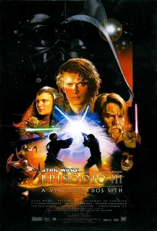
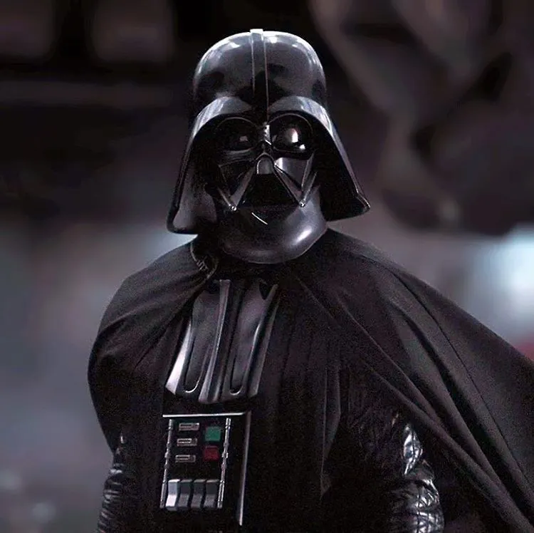
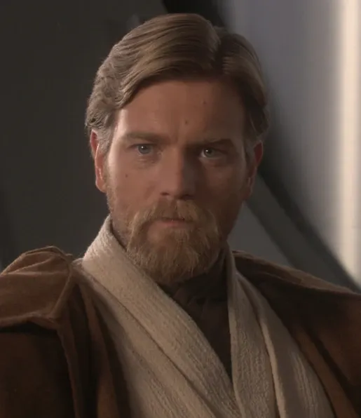
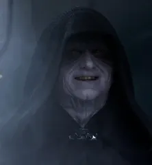

Olá! Seja bem-vindo(a) ao meu site.
Nesse site eu falarei sobre o meu filme favorito. O filme é: Episódio III: Star Wars: Vingança dos Sith. Espero que goste!
Informações Técnicas
Título Original: Star Wars: Episode III - Revenge of the Sith
Data de Lançamento: 19 de maio de 2005
Direção e Roteiro: George Lucas
Produção: Rick McCallum
Produtora: Lucasfilm Ltd.
Distribuição: 20th Century Fox
Trilha Sonora: John Williams
Duração: 140 minutos
Poster Oficial

Alguns Personagens


Anakin Skywalker / Darth Vader
O Escolhido que foi seduzido pelo Lado Sombrio da Força e se tornou Darth Vader.

Obi-Wan Kenobi
Mestre Jedi e antigo mentor de Anakin, que tenta impedir a ascensão do Império.


Palpatine / Darth Sidious
O grande vilão e Lorde Sith que orquestra a queda da República Galáctica.

Padmé Amidala
Senadora de Naboo e esposa secreta de Anakin, cuja tragédia pessoal serve de gatilho para a queda dele pro Lado Sombrio.
História do Filme
Durante as Guerras Clônicas, o Cavaleiro Jedi Anakin Skywalker vive atormentado por visões da morte de sua esposa secreta, a senadora Padmé Amidala, durante o parto. Manipulado por seus medos, ele é seduzido pelas promessas de poder do Chanceler Palpatine, que secretamente é o Lorde Sith Darth Sidious. Em busca de uma forma de salvar Padmé, Anakin trai a Ordem Jedi, cede ao Lado Sombrio da Força e assume a identidade de Darth Vader, tornando-se o novo aprendiz do Sith.
A mando de seu novo mestre, Vader lidera um massacre no Templo Jedi, enquanto Palpatine aciona a Ordem 66. O comando faz com que os soldados clones traiam e exterminem quase todos os Jedi da galáxia. Com a Ordem praticamente aniquilada e o Conselho destruído, Palpatine manipula o Senado Galáctico e transforma a antiga República no tirânico Império Galáctico, autodeclarando-se Imperador com apoio absoluto.
"Você era o Escolhido! Foi dito que você destruiria os Sith, não que se juntaria a eles!"
Ao descobrir a traição, Obi-Wan Kenobi confronta Vader em um duelo brutal no planeta vulcânico Mustafar, deixando-o mutilado e à beira da morte. Paralelamente, Padmé dá à luz os gêmeos Luke e Leia, mas falece logo em seguida. Enquanto Vader é resgatado por Palpatine e confinado a uma icônica armadura cibernética negra para sobreviver, Obi-Wan e Yoda decidem separar e esconder os bebês, partindo para o exílio enquanto o Império inicia seu domínio sobre a galáxia.
Minhas Soundtracks favoritas do Filme
Anakin's Dream'
Escolhi essa pois ela se passa durante e após Anakin ter pesadelos com a morte de Padmé. A música é lenta e trágica, mostrando que aquele ponto é crucial para virada do Anakin futuramente para o Lado Sombrio. Além disso, ela tem nuances da música Across the Stars, a música que toca durante o casamento deles.
Anakin's Betrayal
Essa música se passa durante a execução da Ordem 66, quando os clones começam a atirar contra os Jedi, concluindo o plano de Palpatine. Essa música é trágica, e mostra o peso da cena, junto com sua tragidicidade.
Anakin vs Obi-Wan
Essa música é fantástica! Se passa durante o duelo de Anakin e Obi-Wan, em Mustafar. Ela intercala com a música Battle of the Heroes. Nela há uma mistura de épico com trágico, com nuances da Marcha Imperial, mostrando o Lado Sombrio de Anakin, que no momento já se tornou Darth Vader
Battle of The Heroes
Mais uma música espetacular. Ela também toca durante o duelo entre o Mestre e Padawan, com predominância no início. Ela é frenética e o nome demonstra o que está acontecendo, um duelo de heóis